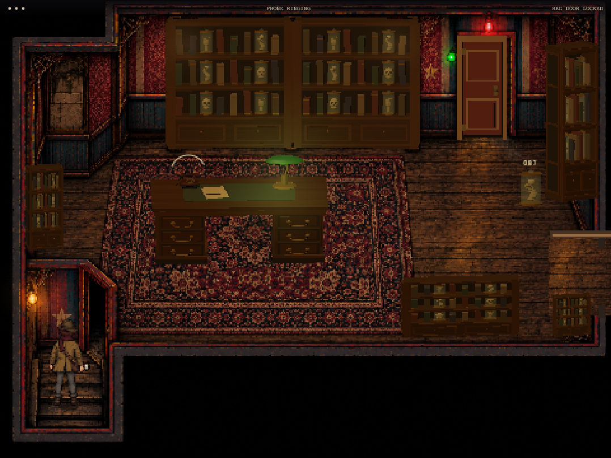

The long specimen library
3½ screens · following camera · larger investigator · solid entry frame · delayed far-end exit
PLAY LEVEL 5 → · Skip the completed phone call · Try the corrected Level 4 crate


Crawl → warning → bile → recovery
Twenty-four authored worm poses: six crawling and six attacking frames in side and frontal views. The live game supplies colliding projectiles and puddles separately.
Faster carousel explosion
Left: previous eight frames at 6.25 fps. Right: twenty-four frames at 30 fps. The blast finishes in 0.8 seconds, followed by lingering procedural smoke.
Keyboard escape recording
Desktop / touch results · Keyboard results · Built-in image generation prompts and saved paths
Phone inspection, jar break, crawl/spit attack, escape, pause and retry tested. The desk and shelves block movement and bile. The phone voices use local speech synthesis. Furniture has simpler detail than the painting; the room keeps a fixed camera.